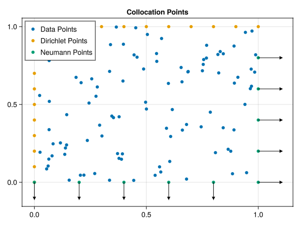
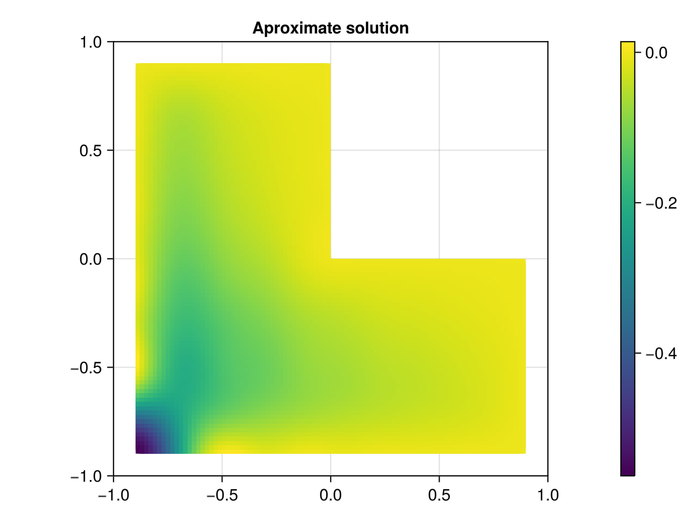

Kernel Collocation Excercise
Table of Contents
1. Regression Approach
given \( \hat{X}:=\left\{ x_j \right\}_{j=1}^n \subset\RR ^d\) we aim to find \(u_h(x) \in \mathcal{H}_{k}\) such that it satisfies \eqref{eq:pde} where
\begin{align} \label{eq:approx} u_h(x) &= \sum_{j=1}^{n} a_j k(x_j,x) \end{align}correspondingly we are able to directly compute
\begin{align*} \nabla_x u(x) &= \sum_{j=1}^n a_j \nabla_x k(x_j ,x) \\ - \nabla_x \cdot \left( a(x) \nabla_x u(x) \right) &= - \left< \nabla_x a(x) , \nabla_x u(x) \right> - a(x) \Delta_x u(x) \\ &= - \sum_{j=1}^{n} a_j \left( \left< \nabla_x a(x) , \nabla_x k(x_j,x) \right> - a(x) \Delta_x k(x_j,x)\right) \end{align*}where \(\nabla_x , \Delta_x\) are the partial gradients and laplacians with respect to the second argument of \(k(x_j, \cdot )\). for a radial basis function \(\phi (r^2) \in C^2(\RR)\) and a corresponding RBF kernel \(k(x,x') := \phi (\|x-x'\|^2)\) they can be computed trivially
\begin{align} \label{eq:2} \nabla_x k(x',x) &= 2*(x - x')*\phi'(\|x-x'\|^2)\\ \Delta_x k(x',x) &= 2*d*\phi'(\|x-x'\|^2) + 4*\phi''(\|x-x'\|^2) \left\|x-x'\right\|^2\\ \end{align}where \(d\) is the dimenstion of \(x\) this leads to the following Linear system
@kernel function system_matrix!(A ,@Const(X), a , ∇a ,k, ∇k, Δk , sdf , grad_sdf , sdf_beta) Iᵢⱼ = @index(Global , Cartesian) @inbounds xᵢ= SVector{2}(view(X, : , Iᵢⱼ[1])) # Essentially X[:,i] @inbounds xⱼ= SVector{2}(view(X, : , Iᵢⱼ[2])) # Essentially X[:,j] if sdf(xᵢ) < 1e-10 if sdf_beta(xᵢ) < 0 # Neumann Boundary Condition @inbounds nᵢ= grad_sdf(xᵢ) @inbounds A[Iᵢⱼ] = a(xᵢ) * (nᵢ ⋅ ∇k(xᵢ , xⱼ)) else # Dirichlet Boundary @inbounds A[Iᵢⱼ] =k(xᵢ , xⱼ) end else # poisson equation @inbounds A[Iᵢⱼ] = ∇a(xᵢ)⋅∇k(xᵢ,xⱼ) - a(xᵢ)*Δk(xⱼ,xᵢ) end end
2. Kernel Implementation
using StaticArrays function rbf_gaussian(r, ::Val{γ}) where γ exp(- γ * r) end function rbf_gaussian′(r , ::Val{γ}) where γ - γ * exp(- γ * r) end function rbf_gaussian′′(r , ::Val{γ}) where γ γ^2 * exp(- γ * r) end function k_gauss(x ::SVector{N}, x̂ ::SVector{N}) where N rbf_gaussian(norm(x-x̂)^2 , Val(1.)) end function ∇k_gauss(x::SVector{N},x̂::SVector{N}) where N rbf_gaussian′(norm(x-x̂)^2 , Val(1.)) * 2*(x-x̂) end function Δk_gauss(x::SVector{N},x̂::SVector{N}) where N d = dot(x-x̂,x-x̂) 4*rbf_gaussian′′(d , Val(1.)) + 4*rbf_gaussian′(d , Val(1.)) * d end
Δk_gauss (generic function with 1 method)
using GLMakie X = range(-5 , 5 , 100) Y = range(-5 , 5 , 100) using LinearAlgebra fig = Figure() ax = Axis3(fig[1,1] , aspect=:equal) gauss(x) = k_gauss(x , [0,0]) z = [gauss([x,y]) for x in X , y in Y] surface!(ax, X,Y, z) save("images/gauss-rbf.png",fig )

3. PDE
such that they satisfy the following system
\begin{align} \label{eq:pde} - \nabla \left( a(x) \nabla u(x) \right) &= f(x) & \text{in} \quad \Omega \\ u(x) &= g_D(x) & \text{on} \quad \Gamma_D \\ \left( a(x) \nabla u(x) \right) \cdot \vec{n}(x) &= g_N & \text{on} \quad \Gamma_N \end{align}3.1. PDE Poisson
this method is able to moddel the poisson equation
\begin{align} \label{eq:poisson} - \Delta u(x) &= f(x) & \text{in} \quad \Omega \\ u(x) &= 0 & \text{on} \quad \Gamma_D \end{align}with \(a(x) = 1 , g_{D}(x) = 0\) and \(\Gamma_{N} = \emptyset \) this is equivalent to \eqref{eq:pde}
using StaticArrays a(x::SVector{2}) = 1 ∇a(x::SVector{2}) = SVector{2}(0.,0.)
f(x::SVector{2}) = 2 * (x[1]+x[2] - x[1]^2 - x[2]^2) g_D(x::SVector{2})= 0 g_N(x::SVector{2} , n::SVector{2}) = 0
3.2. Poisson PDE System
where
using StaticArrays a(x::SVector{2}) = x[1] + 2 ∇a(x::SVector{2}) = SVector{2}(1.,0.)
∇a (generic function with 1 method)
α = 2. β = 0.5 f(x::SVector{2} , ::Val{α}) where α = - α*norm(x ,2)^(α - 2)*(3x[1] +4) - α*(α -2) * (x[1] + 2) * norm(x,2)^(α - 3) g_D(x::SVector{2} , ::Val{α}) where α = norm(x,2)^α g_N(x::SVector{2} , n::SVector{2} , ::Val{α}) where α = α* norm(x,2.)^(α-2.)*(x[1] +2.) * x ⋅ n f(x) = f(x,Val(α)) g_D(x) = g_D(x,Val(α)) g_N(x, n) = g_N(x , n,Val(α))
g_N (generic function with 4 methods)
3.3. right hand side
@kernel function apply_function_colwise!(B ,@Const(X) , f , g_D , g_N , sdf , grad_sdf, sdf_beta) # boilerplate Iᵢ = @index(Global , Cartesian) @inbounds xᵢ= SVector{2}(view(X , : , Iᵢ[1])) # element computation if sdf(xᵢ) < 1e-10 if sdf_beta(xᵢ) < 0 # Neumann Boundary Condition @inbounds nᵢ= grad_sdf(xᵢ) @inbounds B[Iᵢ] = g_N(xᵢ , nᵢ ) else # Dirichlet Boundary @inbounds B[Iᵢ] = g_D(xᵢ) end else # poisson equation @inbounds A[Iᵢⱼ] = ∇a(xᵢ)⋅∇k(xᵢ,xⱼ) - a(xᵢ)*Δk(xⱼ,xᵢ) end @inbounds A[Iᵢ] = f(xᵢ) end
4. Solver
module PDESolvers export PDESolver, PDESystem, solve include("kernel.jl") using .Kernel using KernelAbstractions using LinearAlgebra
struct PDESystem k :: Function ∇k :: Function Δk :: Function a :: Function ∇a::Function f::Function g_D::Function g_N::Function sdf::Function grad_sdf::Function sdf_beta::Function end struct PDESolver S::PDESystem X::AbstractMatrix α :: AbstractVector end function (f::PDESolver)(X) local X_col = [f.X_L f.X_D f.X_N] dev = get_backend(X_col) print("Backend" , dev) K = KernelAbstractions.zeros(dev , Float32, size(X,2) , size(X_col ,2)) print("Size of the system Matrix:" , size(K)) kernel_matrix! = dirichlet_matrix!( dev , 256 , size(K)) kernel_matrix!(K, X , X_col , f.S.k ) return K * f.α end function solve(S, X_col) dev = get_backend(X_col) K = KernelAbstractions.zeros(dev , Float32 , size(X_col , 2) , size(X_col , 2) ) sys_matrix! = system_matrix!( dev , 256 , size(K)) sys_matrix!(K ,X_col , S.a , S.∇a , S.k , S.∇k , S.Δk , S.sdf , S.grad_sdf , S.sdf_beta ) end function get_boundary( S, X ) dev = get_backend(X) B = KernelAbstractions.zeros(dev , Float32 , size(X , 2)) apply! = apply_function_colwise!(dev , 256 , size(X)) apply!(B , X_L , S.f , S.g_D , S.g_N , S.sdf , S.grad_sdf, S.sdf_beta) return B end
end
5. Domains
5.1. Utility
function sdf_square(x::SVector , r::Float64 , center::SVector) return norm(x-center,Inf) .- r end function sdf_L(x::SVector{2}) return max(sdf_square(x , 1. , SVector(0,0)) , - sdf_square(x, 1. , SVector(1.,1.))) end function ∇sdf_L(x::SVector{2}) ForwardDiff.gradient(sdf_L , x) return end function sdf_β(x::SVector{2}) return sdf_square(x , 0.2 , SVector(-1.,-1) ) end function sdf_square_grad(x::SVector{2}, r::Float64, center::SVector{2}) d = x - center if abs(d[1]) > abs(d[2]) return SVector(sign(d[1]), 0.0) elseif abs(d[2]) > abs(d[1]) return SVector(0.0, sign(d[2])) else # Subgradient: pick any valid direction; here we average the two return normalize(SVector(sign(d[1]), sign(d[2]))) end end function sdf_L_grad(x::SVector{2}) f1 = sdf_square(x, 1.0, SVector(0.0, 0.0)) f2 = -sdf_square(x, 1.0, SVector(1.0, 1.0)) if f1 > f2 return sdf_square_grad(x, 1.0, SVector(0.0, 0.0)) elseif f2 > f1 return -sdf_square_grad(x, 1.0, SVector(1.0, 1.0)) # negative because of the minus else # Subgradient — average of both directions g1 = sdf_square_grad(x, 1.0, SVector(0.0, 0.0)) g2 = -sdf_square_grad(x, 1.0, SVector(1.0, 1.0)) return normalize(g1 + g2) end end
6. Results
using Revise includet("src/pdesolver.jl") includet("src/domains.jl")
using .PDESolvers using .Domains
S = PDESystem(k_gauss , ∇k_gauss , Δk_gauss , a, ∇a , f, g_D ,g_N , sdf_L , sdf_L_grad , sdf_β )
PDESystem(Main.k_gauss, Main.∇k_gauss, Main.Δk_gauss, Main.a, Main.∇a, Main.f, Main.g_D, Main.g_N, Main.Domains.sdf_L, Main.Domains.sdf_L_grad, Main.Domains.sdf_β)
using Random using CUDA dev = CUDA.functional() ? cu : Array rng = MersenneTwister(0) r = 0:0.2:1.99 N = unit_box_normals.(r) N = reduce(hcat , N) |> dev X_N = unit_box_path.(r) X_N = reduce(hcat , X_N)|> dev X_D = unit_box_path.(2:0.1:4) X_D = reduce(hcat , X_D) |> dev X_L = rand(rng , Float64, 2,100) |> dev
using LaTeXStrings using Makie using GLMakie fig = Figure() ax = Axis(fig[1,1] , title="Collocation Points") scatter!(ax,X_L |> Array, label="Data Points") scatter!(ax,X_D|> Array, label="Dirichlet Points") scatter!(ax,X_N |> Array, label="Neumann Points") arrows!(ax,X_N[1,:]|> Array , X_N[2,:] |> Array, N[1,:] |> Array, N[2,:] |> Array, lengthscale=0.1) axislegend(ax , position=:lt) save("images/collocation-points.png",fig )

using LinearAlgebra
solution = solve(S ,X_col)
julia-async:55c26c34-42e8-471b-ac5f-c9f5b0baccec
using GLMakie X = range(-2 , 2 , 100) Y = range(-2 , 2 , 100) grid = [ [x,y] for x in X , y in Y] grid = reduce(vcat , grid) grid = reshape(grid, 2,:) fig = Figure() ax = Axis(fig[1,1]) sol = solution(grid) sol = reshape(sol , size(X,1) , :) hm = heatmap!(ax , X,Y, sol) Colorbar(fig[:, end+1], hm) save("images/solution.png",fig )
